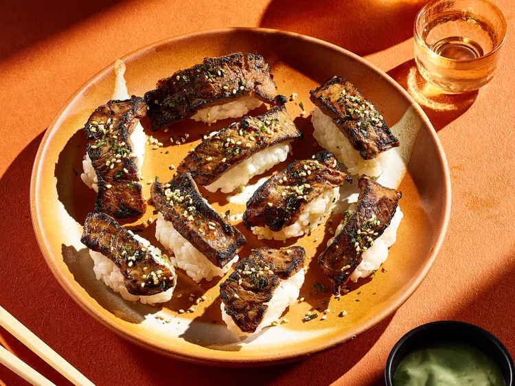

Home
Aburi Steak

Description
“Aburi”,the technique applied to this aburi steak, means flame-seared in Japanese.
The technique is often applied to raw fish, but it works well for tender, marbled beef cuts, too.
A butane torch lets you customize the doneness. Torch less or more depending on how charred you like it.
Ingredients:
- 1 (12 to 16 ounce) boneless rib eye steak
- 1/2 cup short grain white rice
- 3/4 cup water
- 2 teaspoons rice vinegar
- 1 teaspoon white sugar
- 1/2 teaspoon salt
- 1/4 cup less-sodium soy sauce
- 1 tablespoon pure maple syrup
- 1 tablespoon Asian-style chili paste (such as sambal oelek)
- 1 tablespoon vegetable oil
- 1/3 cup sour cream
- 1/4 teaspoon lime zest
- 2 teaspoons fresh lime juice
- 2 teaspoons wasabi paste, or more to taste
- 2 teaspoons furikake seasoning or toasted sesame seeds
Steps:
- Put steak on a waxed paper-lined baking sheet. Freeze until just firm, about 1 hour.
- Meanwhile, for sushi rice, rinse rice under cold running water, rubbing grains together with your fingers.
Combine rice and water in a small saucepan.
Bring to a boil; reduce heat to low. Simmer, covered, until tender and sticky, about 15 minutes.
Remove from heat. Stir together vinegar, sugar, and salt in a small bowl. Stir into rice. Cover; let cool about 45 minutes.
- Meanwhile, thinly slice steak across the grain into 24 (1/4-inch-thick) slices.
Transfer steak to a zip-top bag set in a shallow dish.
- Whisk together soy sauce, maple syrup, chili paste, and oil in a small bowl.
Pour over steak in bag; seal bag. Chill at least 20 minutes or up to 2 hours.
- For sauce, whisk together sour cream, lime zest, lime juice, and wasabi paste.
- Shape rice with wet hands into 24 (1-tablespoon) oval-shaped portions.
Drain steak; discard marinade.
Put steak on a foil-lined baking sheet set on a wire rack.
Char steak with a kitchen torch, turning once, until desired doneness, about 5 minutes for entire recipe.
Put 1 steak piece on each rice portion. Sprinkle with furikake seasoning and serve with sauce.